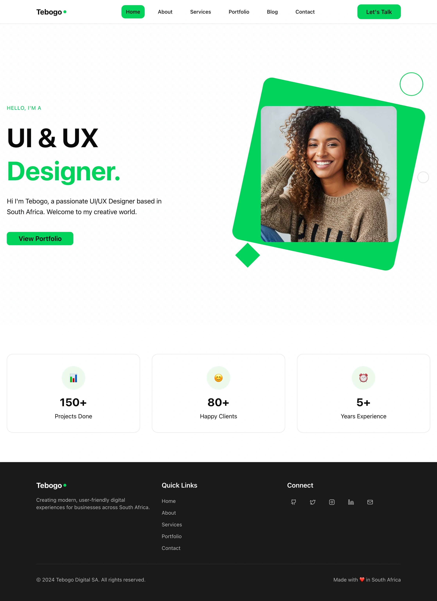

UI/UX Scroll Effect Test
Hover over the images below to see the slow scrolling effect

Eternal Moments Wedding Platform
UI/UX Design • Creative • Web Development
Hover over the image above to see the slow scrolling effect that reveals the full UI/UX design from top to bottom. The effect takes 6 seconds to complete.

Tebogo Portfolio Website
UI/UX Design • Creative
Another example of the scrolling effect on UI/UX portfolio items.